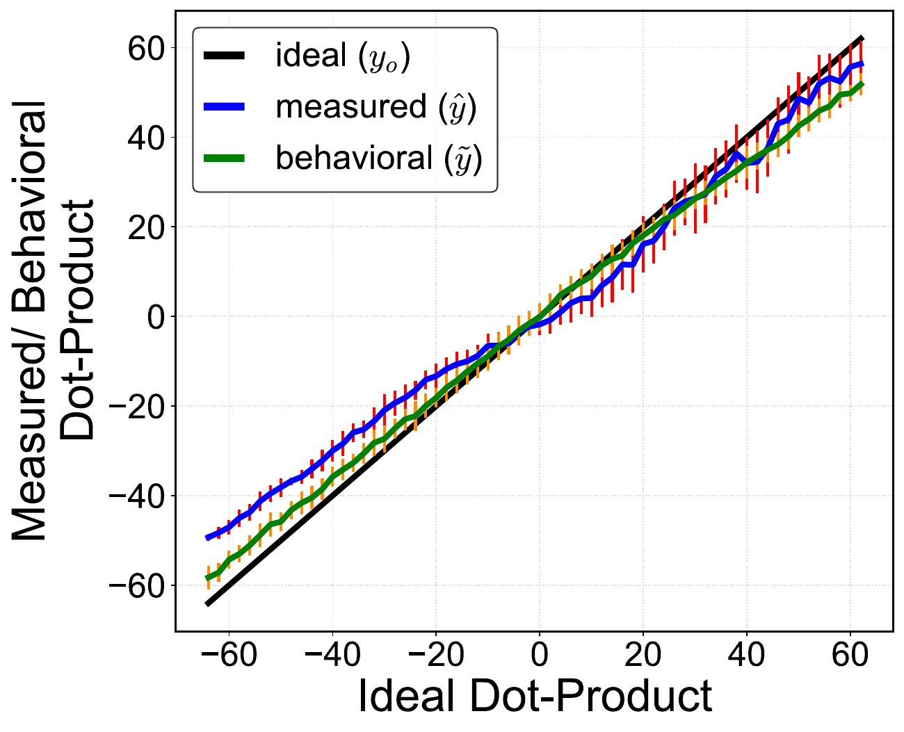

Choose the device directory
Run the relevant MRAM, ReRAM, or FeFET script for the parameter sweep you want to reproduce.
Reference implementation
The public artifact instantiates the four-coordinate technique for MRAM, ReRAM, and FeFET across dimension, conductance contrast, ADC precision, reference voltage, and energy. New device models can replace the device-specific inputs.
Evidence map
Device-specific scripts, isolated non-ideality studies, consolidated sweeps, and chip measurements preserve the route from model assumptions to reported accuracy.
Model workflow
Run the relevant MRAM, ReRAM, or FeFET script for the parameter sweep you want to reproduce.
The per-device scripts save arrays that capture the modeled SNDR trend for that configuration.
The comparison directories load the saved results and generate the corresponding paper plot.
Measured check
The chip-validation folder contains the measured output data, behavioral predictions, and plotting code used to compare them under matched conditions.
Open validation files ↗